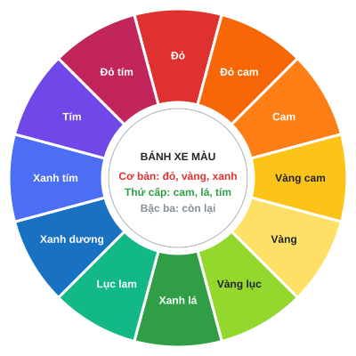

Tài liệu tra cứu cho học sinh. Học xong bài này em sẽ biết dùng sẵn code của người khác (Bootstrap) để làm web nhanh hơn, chọn màu cho đẹp, và bắt đầu dự án Dog Social.
1. Framework | 2. Bootstrap | 3. Web Design & Color Theory | 4. Dự án Dog Social (phần 1) | 5. Bảng tra cứu nhanh
Framework là bộ code viết sẵn (khung sườn) do người khác làm, em chỉ việc dùng lại thay vì tự viết từ đầu.
Ví dụ đời thường: muốn ăn bánh, em có thể tự trồng lúa, xay bột… hoặc mua bột làm bánh trộn sẵn – chỉ cần thêm nước và nướng. Framework chính là "bột trộn sẵn" của lập trình viên.
| Tên | Dùng cho | Ghi chú |
|---|---|---|
| Bootstrap | Giao diện (CSS/JS) | Học trong bài này |
| Tailwind CSS | Giao diện (CSS) | Viết style bằng class nhỏ |
| React, Vue | Web có nhiều tương tác (JavaScript) | Học sau này |
Bootstrap là framework CSS phổ biến nhất thế giới. Em dùng nó bằng cách thêm tên class vào thẻ HTML.
Cách dễ nhất là CDN (tải qua Internet): dán dòng <link> vào <head>.
<head>
<meta charset="UTF-8">
<meta name="viewport" content="width=device-width, initial-scale=1.0">
<title>Trang của em</title>
<link rel="stylesheet"
href="https://cdn.jsdelivr.net/npm/bootstrap@5.3.3/dist/css/bootstrap.min.css">
</head><button class="btn btn-primary">Xanh dương</button>
<button class="btn btn-success">Xanh lá</button>
<button class="btn btn-danger">Đỏ</button>
<button class="btn btn-outline-dark">Viền đen</button>Bootstrap chia chiều rộng thành 12 cột. Cấu trúc luôn là: container → row → col.
<div class="container">
<div class="row">
<div class="col-md-4">Cột 1</div>
<div class="col-md-4">Cột 2</div>
<div class="col-md-4">Cột 3</div>
</div>
</div>| Class | Ý nghĩa |
|---|---|
col-4 | Chiếm 4/12 chiều rộng ở mọi màn hình |
col-md-4 | Chiếm 4/12 khi màn hình ≥ 768px; nhỏ hơn thì mỗi cột chiếm cả hàng |
col-lg-3 | Chiếm 3/12 khi màn hình ≥ 992px |
Các mốc (breakpoint): sm ≥ 576px, md ≥ 768px, lg ≥ 992px, xl ≥ 1200px.
| Nhóm | Class | Tác dụng |
|---|---|---|
| Khoảng cách | m-3, p-3, mt-2, px-4 | margin / padding. Số 0–5 là mức to nhỏ. t b s e x y = trên, dưới, trái, phải, ngang, dọc |
| Chữ | text-center, fw-bold, fs-1…fs-6 | Canh giữa, in đậm, cỡ chữ |
| Màu chữ | text-primary, text-danger, text-white | Đổi màu chữ |
| Màu nền | bg-primary, bg-light, bg-dark | Đổi màu nền |
| Flexbox | d-flex, justify-content-center, align-items-center | Giống flexbox Bài 5, nhưng viết bằng class |
| Ảnh | img-fluid, rounded, rounded-circle | Ảnh co giãn, bo góc, bo tròn |
Card là một "tấm thẻ" gói gọn thông tin về một thứ gì đó (một chú chó, một sản phẩm, một bạn trong lớp…). Em sẽ dùng Card rất nhiều trong dự án Dog Social.
<div class="card" style="width: 18rem;">
<div class="card-body">
<h5 class="card-title">Corgi</h5>
<p class="card-text">Chân ngắn, rất đáng yêu.</p>
<a href="#" class="btn btn-primary">Xem thêm</a>
</div>
</div>Mỗi class làm một việc:
| Class | Việc nó làm |
|---|---|
card | Tạo khung thẻ có viền và bo góc |
card-body | Chừa lề bên trong để chữ không dính sát viền |
card-title | Tiêu đề của thẻ |
card-text | Đoạn mô tả |
style="width: 18rem;" | Đặt chiều rộng thẻ (nếu bỏ đi, thẻ sẽ rộng hết khung chứa nó) |
Thêm thẻ <img> với class card-img-top ngay phía trên card-body. Ảnh sẽ tự co giãn vừa chiều rộng thẻ.
<div class="card" style="width: 18rem;">
<img src="images/corgi.jpg" class="card-img-top" alt="Chú chó Corgi">
<div class="card-body">
...
</div>
</div>src phải đúng với thư mục của em (nhớ lại đường dẫn ở Bài 2). Nếu ảnh không hiện, kiểm tra lại tên file và thư mục images.btn-success hoặc btn-outline-dark xem có gì khác.
<meta name="viewport"> → trang không responsive trên điện thoại.col ngoài row, hoặc row ngoài container → lưới bị lệch.btn-prymary) → Bootstrap bỏ qua, không báo lỗi.style.css và gắn sau link Bootstrap (nhớ Specificity ở Bài 4).| Nguyên tắc | Ý nghĩa | Cách làm |
|---|---|---|
| Căn chỉnh (Alignment) | Các phần tử thẳng hàng, gọn gàng | Dùng chung 1 lề trái hoặc canh giữa nhất quán |
| Tương phản (Contrast) | Chữ và nền phải dễ phân biệt | Chữ đậm trên nền sáng, hoặc chữ trắng trên nền tối |
| Khoảng trắng (White space) | Chừa chỗ trống để mắt "thở" | Dùng padding, margin thoải mái |
| Phân cấp (Hierarchy) | Cái quan trọng thì to và nổi hơn | Tiêu đề lớn, nội dung nhỏ hơn, nút kêu gọi có màu nổi |
| Nhất quán (Consistency) | Cùng loại thì cùng kiểu | Mọi nút cùng màu, cùng bo góc; chỉ dùng 1–2 phông chữ |
Bánh xe màu gồm: màu cơ bản (đỏ, vàng, xanh dương), màu thứ cấp (cam, xanh lá, tím – trộn từ 2 màu cơ bản) và màu bậc ba.

Hình: bánh xe màu 12 màu. Hai màu đối diện nhau là cặp màu bổ sung (ví dụ xanh dương – cam).
Màu nóng (đỏ, cam, vàng) tạo cảm giác ấm áp, sôi động. Màu lạnh (xanh lá, xanh dương, tím) tạo cảm giác bình tĩnh, tin cậy.
| Kiểu phối | Cách chọn | Cảm giác |
|---|---|---|
| Đơn sắc (Monochromatic) | 1 màu, đổi độ sáng/tối | Hài hòa, dễ làm, khó sai |
| Tương đồng (Analogous) | 3 màu nằm cạnh nhau trên bánh xe | Êm dịu, tự nhiên |
| Bổ sung (Complementary) | 2 màu đối diện nhau (xanh dương – cam) | Tương phản mạnh, nổi bật |
| Kiểu phối | Nên chọn khi… | Hợp với | Lưu ý |
|---|---|---|---|
| Đơn sắc | Em mới tập thiết kế, muốn trang trông gọn gàng và "chắc tay"; hoặc cần giao diện nghiêm túc, tập trung vào nội dung. | Blog, trang học tập, trang giới thiệu cá nhân, web tối giản | Dễ bị nhàm và khó làm nút bấm nổi bật. Hãy dùng màu đậm nhất cho nút quan trọng. |
| Tương đồng | Em muốn trang êm mắt, có không khí (vui vẻ, ấm áp hoặc mát mẻ) mà vẫn có nhiều sắc độ. | Web du lịch, ẩm thực, thiên nhiên, thú cưng (như Dog Social) | Độ tương phản yếu, nên chọn 1 màu đậm hơn hẳn làm màu nhấn và chữ phải đủ tối/sáng. |
| Bổ sung | Em muốn thu hút sự chú ý vào một chỗ: nút mua hàng, nút đăng ký, banner khuyến mãi. | Web bán hàng, game, trang sự kiện, poster | Rất "gắt" nếu dùng 50–50. Dùng 1 màu làm nền chính, màu đối diện chỉ chấm phá (khoảng 10%). |
Ví dụ cho Dog Social: nền trắng và xanh nhạt (60%), xanh dương đậm cho banner, menu, thẻ nổi bật (30%), vàng cho các nút quan trọng (10%). Xanh dương và vàng gần như đối diện nhau trên bánh xe màu (phối bổ sung), nên nút vàng nổi bật rõ trên nền xanh.
| Cách viết | Ví dụ |
|---|---|
| Tên màu | color: red; |
| Mã Hex | color: #F76707; |
| RGB | color: rgb(247, 103, 7); |
Mục tiêu: làm trang chủ giới thiệu ứng dụng Dog Social (mạng xã hội giúp chủ nuôi tìm bạn chơi cho chú chó) bằng Bootstrap. Trang khá dài nên được chia thành 6 bước nhỏ, mỗi bước là một khối giao diện.
👉 Mở trang thực hành từng bước Xem trang hoàn chỉnh
| Bước | Khối giao diện | Kiến thức luyện tập |
|---|---|---|
| 1 | Thanh menu | navbar, d-flex, ẩn/hiện theo màn hình (d-none d-md-inline) |
| 2 | Banner (Hero) | Lưới 2 cột, chữ to display-4, nút viền, khung điện thoại bằng CSS |
| 3 | 3 tính năng | row + col-md-4, ô icon bo góc |
| 4 | Đánh giá khách hàng | carousel (cần JavaScript của Bootstrap) |
| 5 | Bảng giá 3 gói | card, list-unstyled, badge, nổi bật 1 thẻ |
| 6 | Kêu gọi + chân trang | Nút bo tròn, nền vàng/navy |
:hover + transition trong style.css – xem trong từng bước.viewportPhần 2 (buổi sau) sẽ hoàn thiện dự án.
| Em muốn… | Dùng |
|---|---|
| Nút bấm có màu | class="btn btn-primary" |
| Giới hạn chiều rộng, canh giữa trang | class="container" |
| Chia cột responsive | row + col-12 col-md-6 col-lg-4 |
| Khoảng cách giữa các cột | row g-3 |
| Canh giữa chữ | text-center |
| Chữ đậm / to | fw-bold / fs-1 |
| Padding / margin | p-3 / m-3, mt-4, px-2 |
| Màu nền / màu chữ | bg-dark / text-white |
| Thẻ nội dung | card, card-body, card-title, card-text |
| Ảnh co giãn theo khung | img-fluid |
| Xếp ngang, canh giữa | d-flex justify-content-center align-items-center |
col-md-6 khác col-6 ở điểm nào?style.css của em phải gắn sau link Bootstrap?